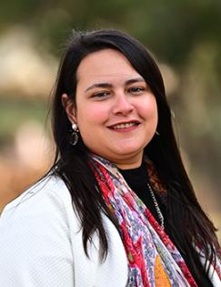

Nada Rostom
Development Economist · Doctoral Researcher, University of Antwerp & IOB
I am a development economist and doctoral researcher at the Faculty of Business and Economics, University of Antwerp, Belgium, and I am affiliated with the Institute of Development Policy (IOB). In my work, I use experimental and quasi-experimental methods to study migration, refugees, climate change, food security, social protection and women's empowerment in the MENA region, particularly in Egypt.
Before my PhD, I was a research manager at J-PAL MENA, where I managed research projects, led fieldwork and worked closely with policymakers.
Research interests
- Migration and refugees
- Climate change and food security
- Social safety nets
- Women's empowerment
Education
- Ph.D. in Applied Economics, University of Antwerp (expected 2027)
- M.Sc. in Development Economics (2021)
- B.Sc. in Economics (2016)